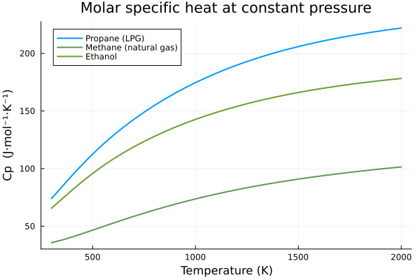
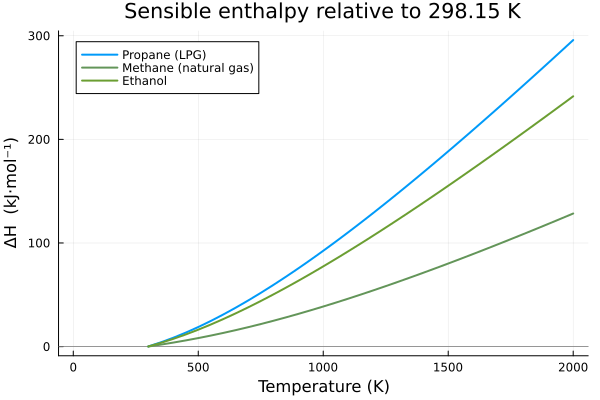

Thermochemical comparison of fuels
This tutorial compares the thermal behavior of three fuels of interest in energy systems, using Glenn.jl:
| Species | Fuel |
|---|---|
CH4 | Methane (natural gas) |
C2H5OH | Ethanol (biofuel) |
C3H8 | Propane (LPG) |
We will visualize $C_p(T)$, $S^\circ(T)$ and the sensible enthalpy change $\Delta H(298.15\,\mathrm{K} \to T)$ over a temperature range relevant to combustion.
Resolving the identifiers
get_available_species matches by substring, so we filter by exact name and gas phase to get the correct id for each species.
using Glenn
FUELS = Dict(
"CH4" => "Methane (natural gas)",
"C2H5OH" => "Ethanol",
"C3H8" => "Propane (LPG)",
)
function resolve_id(calc, name, phase="gas")
for s in get_available_species(calc, name)
if s.name == name && s.phase == phase
return s.id
end
end
error("Species '$name' ($phase) not found")
end
calc = Calculator()
ids = Dict(name => resolve_id(calc, name) for name in keys(FUELS))
for (name, sid) in ids
println(" ", rpad(name, 8), " -> id ", sid)
end C3H8 -> id 393
CH4 -> id 296
C2H5OH -> id 370Collecting properties over 300–2000 K
We use get_properties_range to evaluate all temperatures at once. The 300–2000 K range spans from ambient conditions up to typical flames.
temperatures = collect(300:50:2000)
data = Dict()
for (name, sid) in ids
results = get_properties_range(calc, sid, temperatures)
Ts = [r.temperature for r in results]
cp_vals = [r.cp for r in results]
s_vals = [r.s for r in results]
dh_vals = [
calculate_enthalpy_change(calc, sid, 298.15, T) / 1000.0
for T in Ts
] # kJ/mol
data[name] = Dict(
"T" => Ts,
"cp" => cp_vals,
"s" => s_vals,
"dh" => dh_vals,
)
end
println("Properties collected for: ", join(keys(data), ", "))Properties collected for: C3H8, CH4, C2H5OHSpecific heat $C_p(T)$
\[C_p\]
rises with temperature as more vibrational modes become active. Larger molecules (ethanol, propane) have higher $C_p$ because they have more degrees of freedom.
using Plots
gr()
p1 = plot(
title = "Molar specific heat at constant pressure",
xlabel = "Temperature (K)",
ylabel = "Cp (J·mol⁻¹·K⁻¹)",
legend = :topleft,
grid = true,
)
colors = palette(:default, length(data))
for (i, (name, d)) in enumerate(data)
plot!(p1, d["T"], d["cp"], label=FUELS[name], lw=2, color=colors[i])
end
p1
Sensible enthalpy $\Delta H(298.15\,\mathrm{K} \to T)$
This is the heat required to warm 1 mol of fuel from 298.15 K up to $T$ — a central quantity in energy balances for preheating and heat recovery (HRSG).
p2 = plot(
title = "Sensible enthalpy relative to 298.15 K",
xlabel = "Temperature (K)",
ylabel = "ΔH (kJ·mol⁻¹)",
legend = :topleft,
grid = true,
)
hline!(p2, [0.0], color=:gray, lw=0.8, label=nothing)
for (i, (name, d)) in enumerate(data)
plot!(p2, d["T"], d["dh"], label=FUELS[name], lw=2, color=colors[i])
end
p2
Numerical summary at reference points
Direct comparison of $C_p$ and $S^\circ$ at three temperatures of interest.
using Printf
targets = [300, 1000, 2000]
println(rpad("Fuel", 22), " ", lpad("T (K)", 6), " ", lpad("Cp", 10), " ", lpad("S°", 10))
println("-"^50)
for (name, d) in data
for T in targets
i = findfirst(x -> x == Float64(T), d["T"])
if i !== nothing
@printf("%-22s %6d %10.3f %10.3f\n",
FUELS[name], T, d["cp"][i], d["s"][i])
end
end
println()
endFuel T (K) Cp S°
--------------------------------------------------
Propane (LPG) 300 73.955 270.770
Propane (LPG) 1000 174.613 417.339
Propane (LPG) 2000 221.955 556.442
Methane (natural gas) 300 35.760 186.591
Methane (natural gas) 1000 73.676 248.330
Methane (natural gas) 2000 101.442 309.447
Ethanol 300 65.593 280.996
Ethanol 1000 142.689 404.550
Ethanol 2000 178.201 516.949close(calc)Reading the results
- Ethanol and propane, being larger molecules, show higher $C_p$ and $S^\circ$ than methane across the whole range.
- The sensible enthalpy grows almost linearly at high temperatures, reflecting the plateau of $C_p$.
- These data feed energy balances in combustion chambers, gasifiers and power cycles.